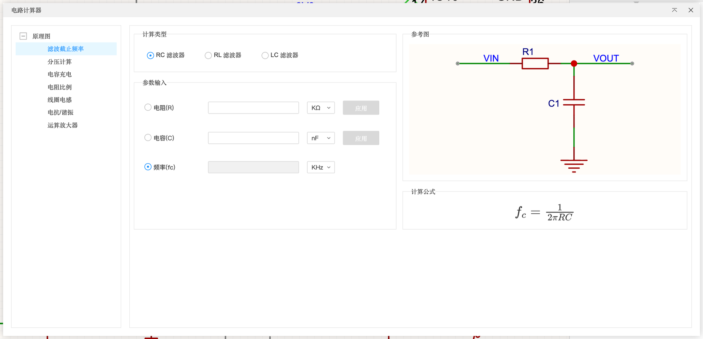
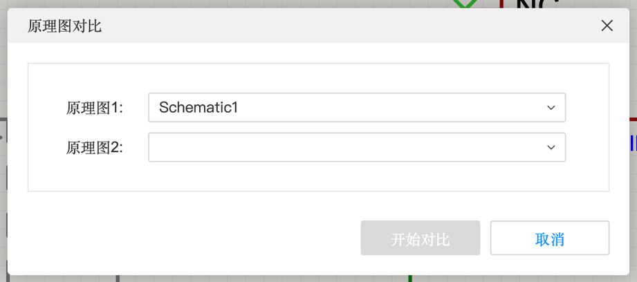
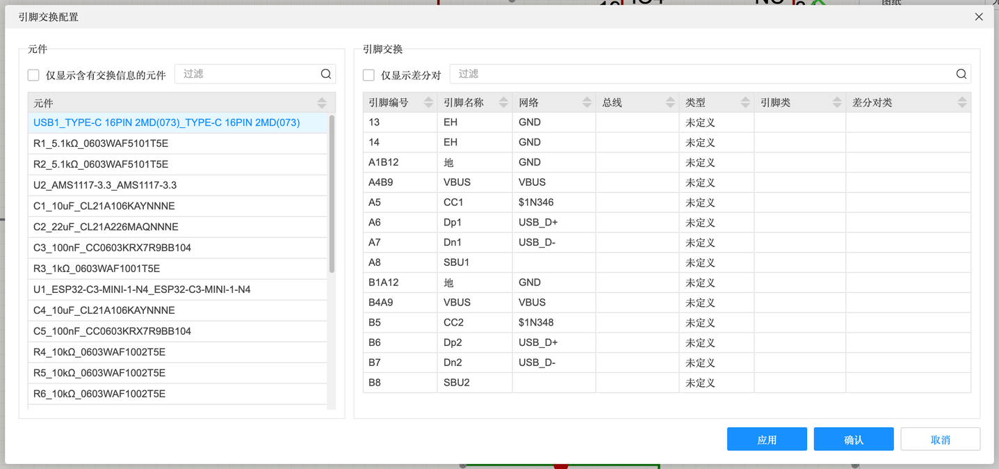
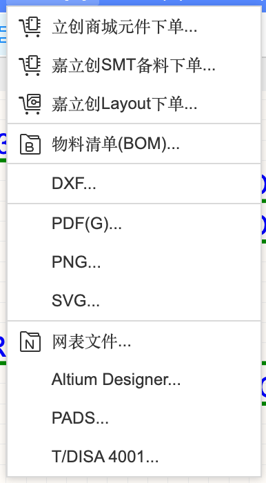
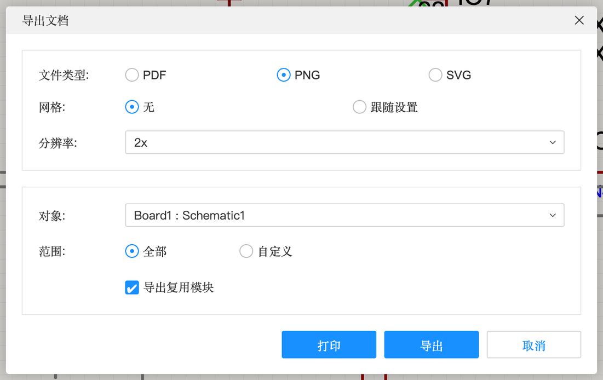
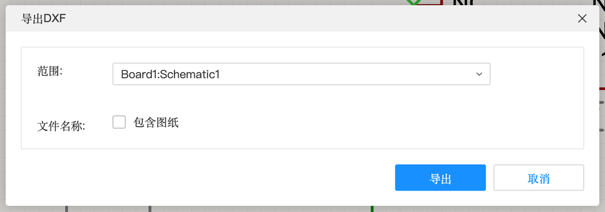
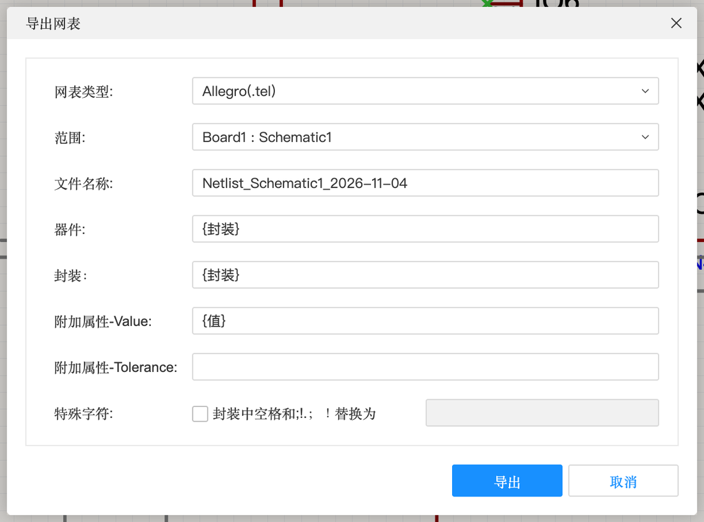
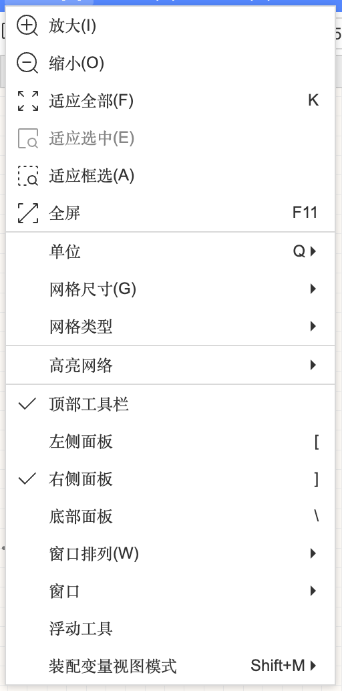
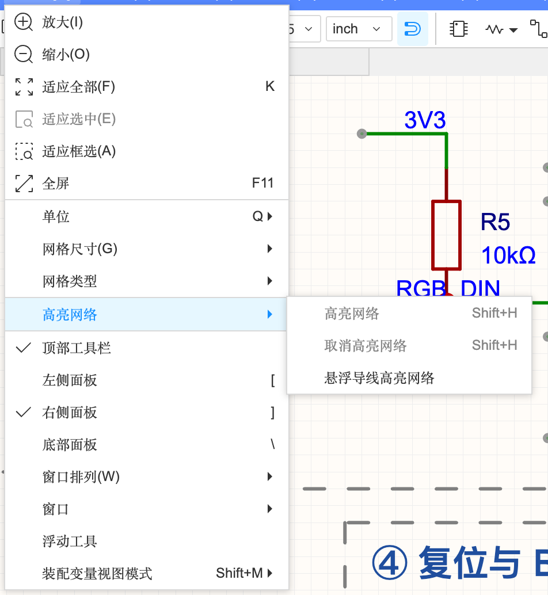
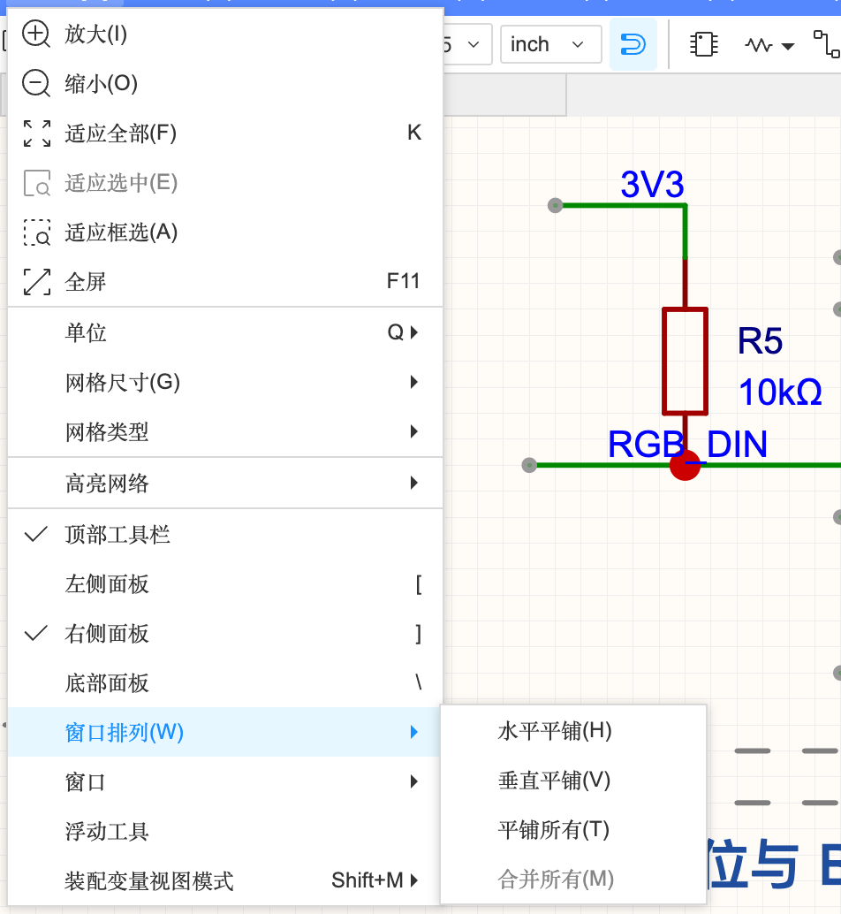

4.6 工具、输出与视图
最后是一堆实用工具：电路计算器、原理图/网表对比、引脚交换，各种导出格式（BOM、PDF、图片、DXF、网表），以及让大图更好看的视图功能。
工具#

电路计算器#

内置一组常用计算，不用再去网上找：
- 滤波截止频率：RC / RL / LC 滤波器，输入 R、C 算截止频率 fc = 1/(2πRC)，或反过来
- 分压计算：两个电阻分压得多少伏（原理见 2.3）
- 电容充电：RC 充电到某个电压要多久
- 电阻比例、线圈电感、电抗/谐振、运算放大器增益
每种计算都是三个量里填两个、点另一个旁边的「应用」算出第三个。
原理图对比、网表对比#

比较两个原理图（比如分支和 main，或者 V1 和 V2）有哪些不同：多了 / 少了哪些元件、哪些连接变了。网表对比是比较两份网表文件（比如和别的软件导出的网表核对）。
引脚交换#

有些引脚功能一样、可以互换（比如单片机的两个普通 IO、电阻的两端）。在这里配置好可交换的引脚组，布 PCB 时如果发现某两根线交叉了，就可以用「工具」→「交换」→「引脚交换」把它们换一下，线就顺了，原理图会同步更新。
其他工具#
- 日志：底部日志面板，所有操作的提示、警告都在这里（比如“唯一 ID 重复”）
- 封装管理器 / 器件管理器 / 器件标准化：见 4.1
- 装配变量：见 4.4
- IPC/DAC-2552 属性：按行业标准给元件加属性，一般用不到
输出#

| 导出项 | 得到什么 | 用途 |
|---|---|---|
| 立创商城元件下单… | 跳转立创商城，按 BOM 一键加购 | 买元件自己焊 |
| 嘉立创 SMT 备料下单… | 给 SMT 贴片准备物料 | 见 B-4 |
| 嘉立创 Layout 下单… | 付费请工程师帮你画 PCB | — |
| 物料清单(BOM)… | Excel / CSV 元件清单 | 见 A-10；导出前会先提示做器件标准化 |
| DXF… | CAD 格式的原理图图形 | 给机械/CAD 软件用 |
| PDF / PNG / SVG… | 文档或图片 | 交作业、写报告（对话框和「打印」相同，见 3.2） |
| 网表文件… | 连接关系文件 | 导给别的 PCB 软件 |
| PADS / T/DISA 4001… | 别的软件 / 标准格式 | 跨软件协作（第 12 章） |



导出网表
| 选项 | 含义 |
|---|---|
| 网表类型 | 目标软件格式，如 Allegro(.tel) 等（下拉选择） |
| 范围 / 文件名称 | 导出哪个原理图、文件名 |
| 器件 / 封装 | 网表里器件名、封装名取哪个属性 |
| 附加属性 | 额外带上 Value、Tolerance 等字段 |
| 特殊字符 | 封装名里的空格和 ; ! . 等符号替换成什么（别的软件不认这些字符） |
视图#

| 功能 | 快捷键 | 说明 |
|---|---|---|
| 放大 / 缩小 / 适应全部 | K 适应全部 | 迷路了就按 K |
| 适应选中 / 适应框选 | — | 把选中的东西放大到满屏 / 拉框放大 |
| 全屏 | F11F11 在 Mac 上会冲突，用 ⌃ ⌘ F | 见 0.4 |
| 单位 | Q | inch / mm 切换 |
| 网格尺寸 / 网格类型 | — | 0.1 / 0.05 / 0.02 / 0.01 inch |
| 高亮网络 | ⇧H | 高亮选中导线所在的整个网络；“悬浮导线高亮网络”= 鼠标停在线上就高亮 |
| 左侧 / 右侧 / 底部面板 | [ ] \ | 开关面板 |
| 窗口排列 | — | 水平平铺 / 垂直平铺 / 平铺所有 / 合并所有：同时看原理图和 PCB |
| 浮动工具 | — | 选中对象时出现的小工具栏 |
| 装配变量视图模式 | ⇧M | 见 4.4 |


本章小结#
- 会用多张图页，并用网络端口跨页连接
- 分得清导线、网络标签、网络标识、网络端口、总线、非连接标识
- 会用查找相似对象批量修改，用对齐/分布把图排整齐
- 知道设计规则里每个等级的意思，会看懂常见 DRC 报错
- 会分配位号、更新到 PCB、交叉选择
- 会导出 PDF 交作业、导出 BOM 买元件
下一步：第 5 章（元件库：自己画符号和封装）、D（PCB 设计完整基础）。